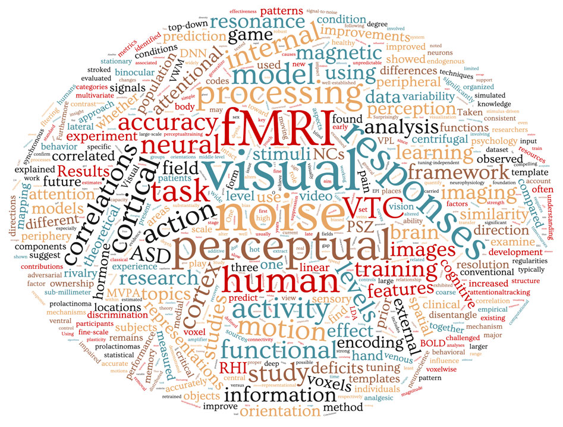

|
Laboratory of Cognitive Computational Neuroscience and Neuroimaging

We are recruiting undergraduate research assistants and graduate students!!! Let me know if you are interested in Cognitive Science, Computational Psychiatry, and Neuroimaging.
The group of Cognitive Computational Neuroscience and Neuroimaging (CCNN) is led by Dr.Ru-Yuan Zhang (张洳源 in Chinese), who is currently a Principal Investigator at the Institute of Psychology and Behavioral Science and Shanghai Mental Health Center at Shanghai Jiao Tong University, Shanghai, China.
We are interested in using various behavioral and neuroimaging methods to investigate computational principles of human cognition.
Contact:
Dr. Ru-Yuan Zhang
Shanghai Key Laboratory of Psychotic Disorders, Shanghai Mental Health Center
Institute of Psychology and Behavioral Science
Shanghai Jiao Tong University
Shanghai, China. 200030
Mail to:
315 Zhongyuan, Shanghai Jiao Tong University
1954 Huashan Road, Xuhui District
Shanghai, China 200030
Email: ruyuanzhangATgmail.com
or ruyuanzhangATsjtu.edu.cn
|
News!
- Sep 23, 2021
- New paper "Atypically larger variability of resource allocation accounts for visual working memory deficits in schizophrenia" accepted in PLoS computational biology
- July 22, 2021
- New paper "Dissociable neural representations of adversarially perturbed images in deep neural networks and the human brain" accepted in Frontiers in NeuroInformatics
- New paper "Action video game play facilitates 'learning to learn'" accepted in Communications biology
- May 8, 2021
- New paper "SimAM: A Simple, Parameter-Free Attention Module for Convolutional Neural Networks" accepted in ICML
- Oct 10, 2020
- July 16, 2020
- New paper about noise correlations in fMRI has been accepted in Plos Computational Biology
- May 14, 2020
- New paper has been accepted in Neuroimage!
- Jan 06, 2020
- Start the new job at National Instititue of Mental Health
- Dec 08, 2019
- New preprint online bioRxiv
We develop a temporal decomposition method to remove venous effects in 7T high-resolution imaging
- Oct 06, 2019
- July 28, 2019
- Our short paper on noise correlation on human V1 activity accepted in Cognitive Computational Neuroscience Conference at Berlin this year!
- July 06, 2019
- Our new paper based on transfer learning
and CNN has been published in Journal of Neuroscience Methods link
- March 31, 2019
- Checkout my new paper about noise correlations and information coding in fMRI data.bioRxiv
- March 6, 2019
- New paper about pain perception and rubber hand illusion has been accepted in Frontiers in Neurosicence.PDF
- March 5, 2019
- New manuscript about visual working memory and distractibility in schizophrenia is available from bioRxiv.
- Feb 25, 2019
- New manuscript about visual encoding models with transfer learning and non-linear prediction algorithms has been submitted. The manuscript is available from arxiv.
- New Neuroimage paper has been published. PDF
|